Laravel merupakan framework berbasis PHP yang digunakan untuk mempermudah proses pengembangan aplikasi web. Laravel menyediakan berbagai fitur seperti routing, controller, migration, ORM Eloquent, dan template engine Blade yang membantu developer dalam membangun aplikasi secara lebih terstruktur dan efisien.
Pada praktikum ini dilakukan proses instalasi Laravel menggunakan Composer dan Visual Studio Code sebagai editor kode. Selain itu dilakukan pembuatan controller, view, serta routing sederhana untuk menampilkan halaman web menggunakan arsitektur MVC (Model View Controller).
Praktikum ini bertujuan untuk memahami dasar penggunaan Laravel mulai dari instalasi hingga menjalankan aplikasi web sederhana.
Memahami proses instalasi Laravel.
Memahami fungsi Composer dalam Laravel.
Memahami struktur dasar framework Laravel.
Mempelajari penggunaan Controller pada Laravel.
Mempelajari pembuatan View menggunakan Blade.
Memahami proses Routing pada Laravel.
Langkah pertama adalah menginstall XAMPP yang digunakan sebagai web server dan database server. XAMPP menyediakan PHP dan MySQL yang dibutuhkan Laravel. Setelah instalasi selesai, dilakukan pengecekan versi PHP melalui terminal.
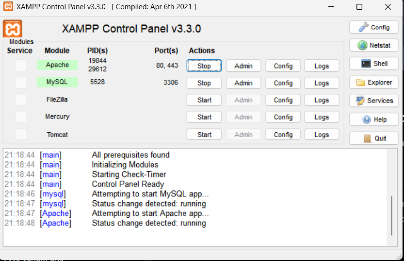
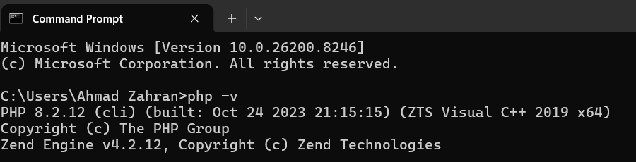
php -v)Selanjutnya dilakukan instalasi Composer yang berfungsi untuk mengelola dependency pada Laravel.
Pengecekan instalasi Composer dilakukan menggunakan perintah:
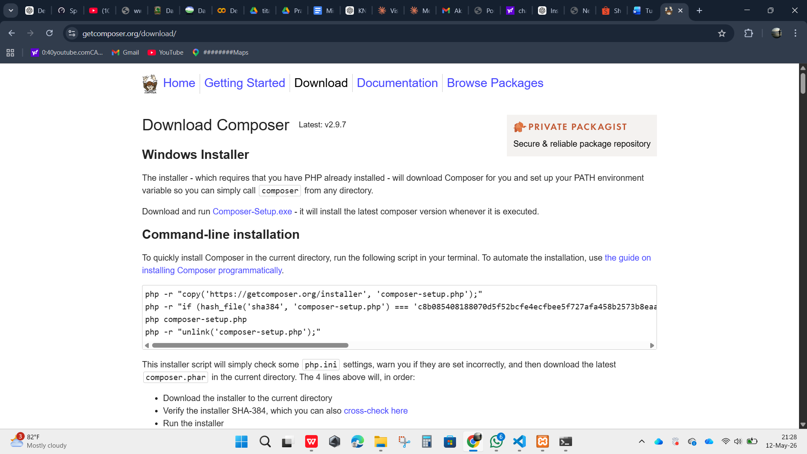
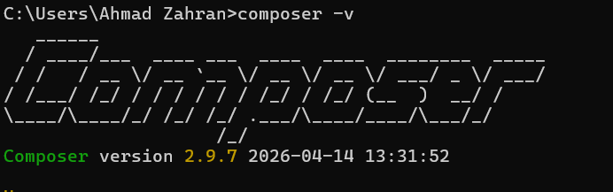
Project Laravel dibuat menggunakan Composer dengan perintah:
Perintah tersebut akan mengunduh dan menginstall framework Laravel beserta dependency yang diperlukan.
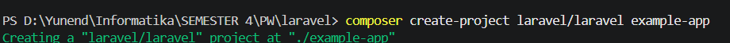
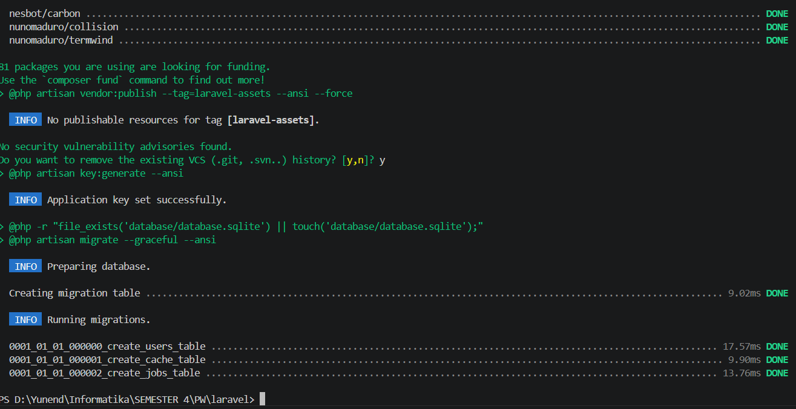
Laravel dijalankan menggunakan perintah:
Setelah server berjalan, aplikasi dapat diakses melalui browser pada alamat: http://127.0.0.1:8000
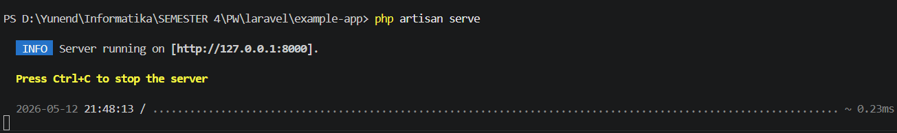
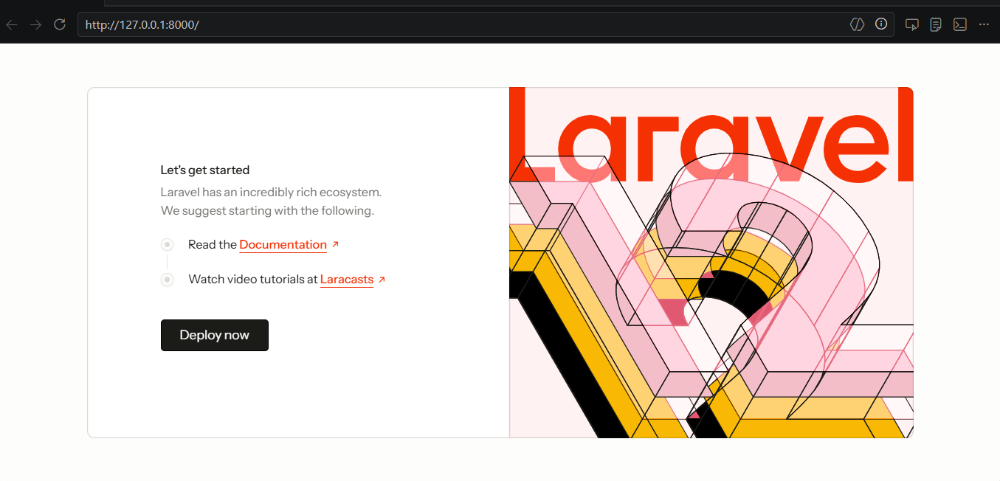
Buat controller dengan nama User, di dalamnya buat function index,
buat view dalam folder resources/user/index, buat tampilan HTML sederhana,
dan buatkan routing untuk menampilkan view tersebut.
Controller dibuat menggunakan perintah:
Controller digunakan untuk mengatur logika aplikasi dan menghubungkan route dengan view.
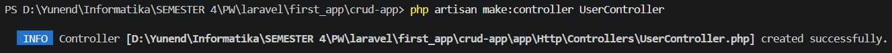
Edit file UserController.php kemudian ditambahkan function index()
untuk menampilkan halaman view.
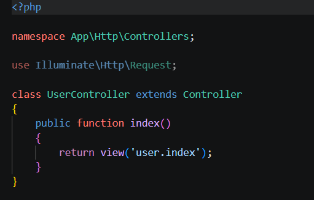
index() pada UserController yang me-return view 'user.index'
Buka folder resources/views dan buat folder user,
kemudian dibuat file index.blade.php yang berisi tampilan HTML sederhana.
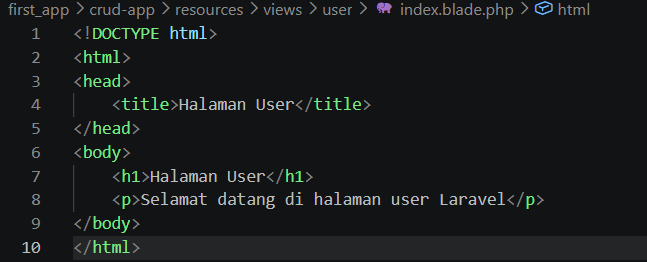
resources/views/user/index.blade.php dengan HTML sederhana
Routing dibuat pada file routes/web.php untuk menghubungkan URL dengan controller.
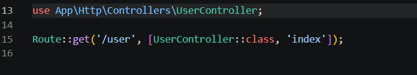
/user diarahkan ke UserController@index pada routes/web.phpSetelah semua langkah selesai, hasil dapat dilihat melalui browser pada alamat yang telah dikonfigurasi pada routing.
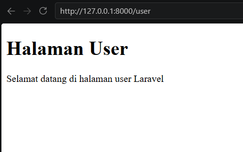
http://127.0.0.1:8000/user berhasil tampil di browserBerdasarkan praktikum yang telah dilakukan, dapat disimpulkan bahwa framework Laravel mempermudah proses pengembangan aplikasi web dengan konsep MVC (Model View Controller). Instalasi Laravel dilakukan menggunakan Composer dan dijalankan melalui terminal menggunakan perintah artisan.
Pada praktikum ini berhasil dibuat sebuah controller bernama UserController, function index, view sederhana menggunakan Blade, serta routing untuk menampilkan halaman web. Dengan demikian, praktikum ini memberikan pemahaman dasar mengenai struktur dan alur kerja Laravel dalam membangun aplikasi web sederhana.